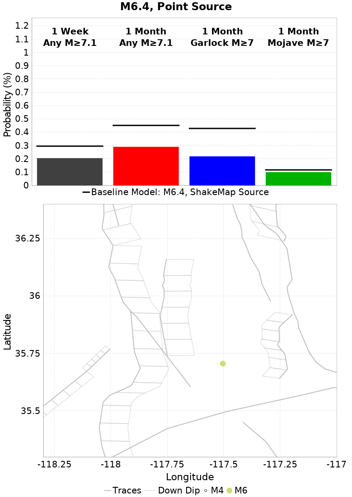
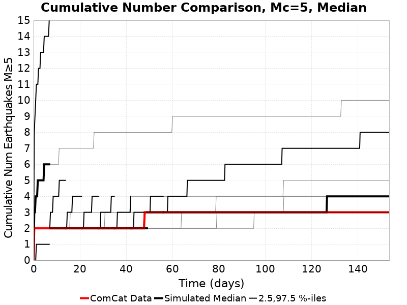
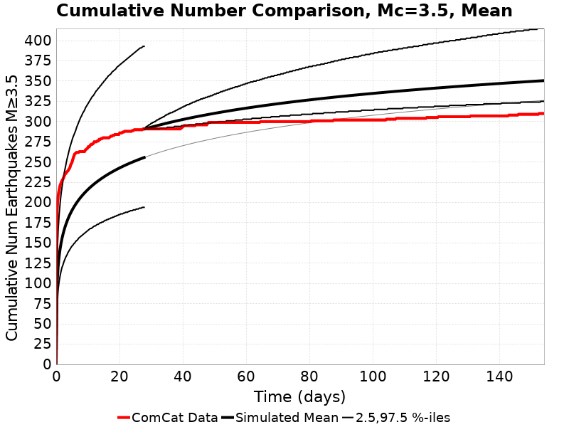
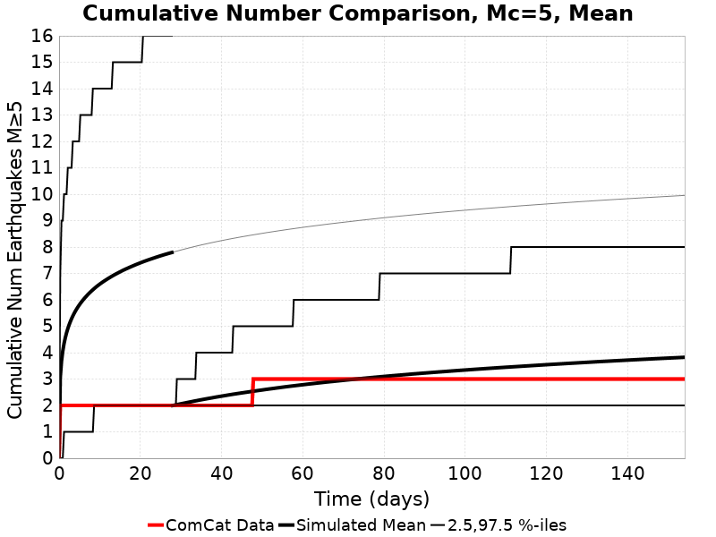
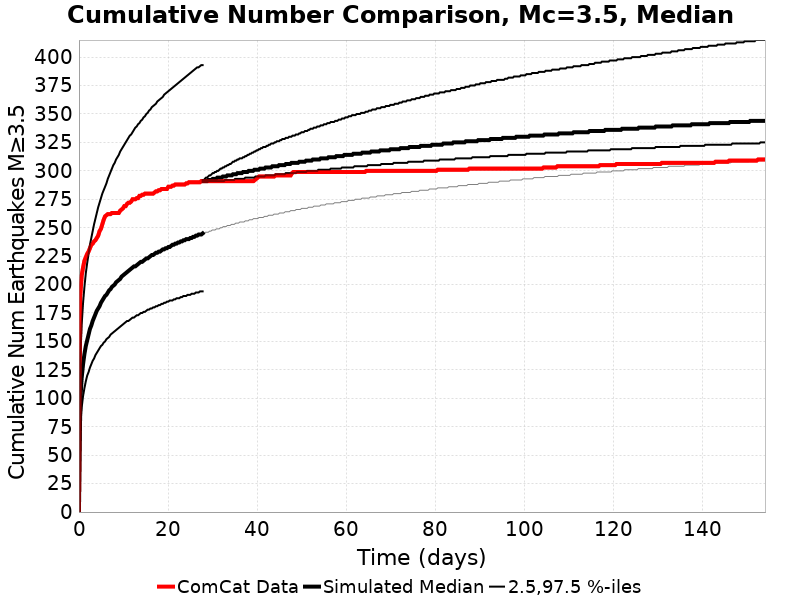
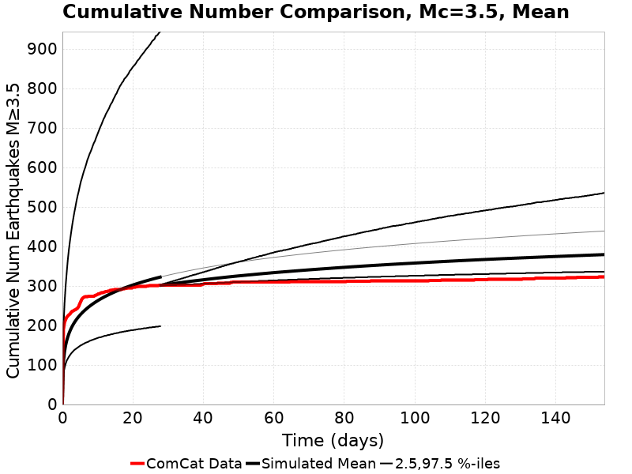
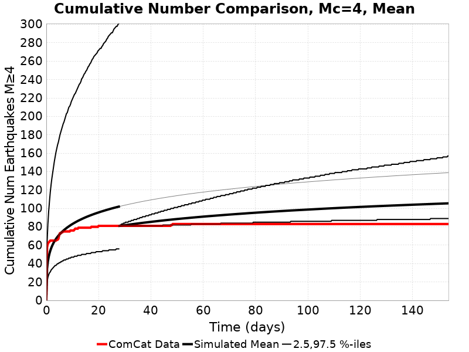
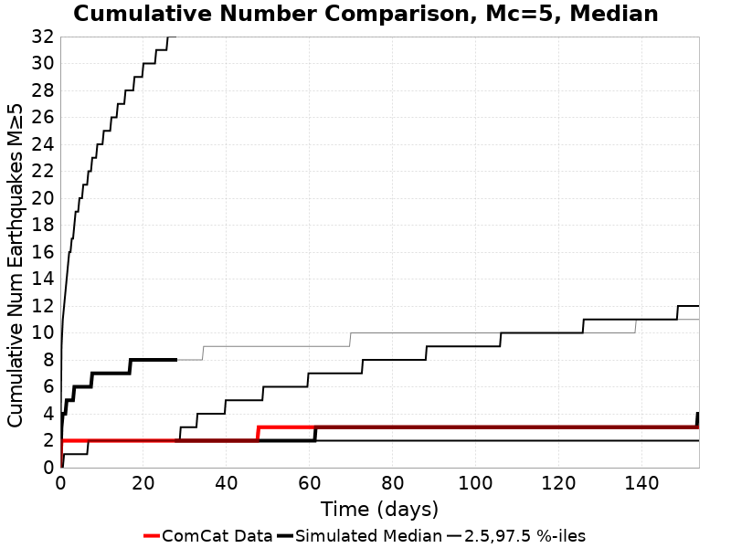
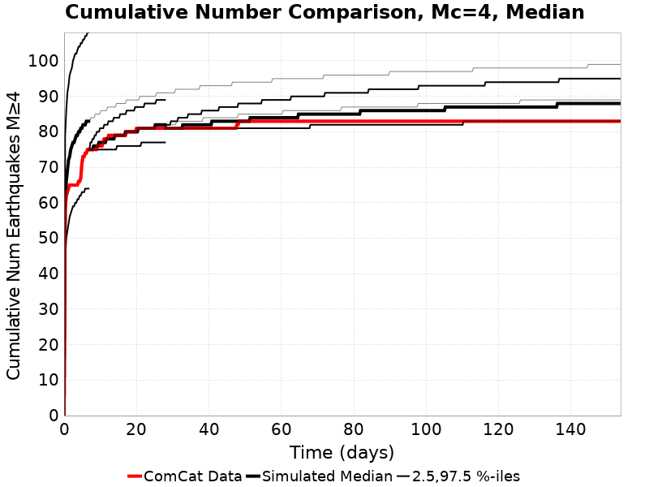

This is a landing page for various Ridgecrest figures and tables. Click on the simulation names in the tables below to see the details of each simulation, along with many plots.
Download my 2019 SCEC Annual Meeting poster here., or read the abstract here.
You can also view the complete list of UCERF3-ETAS simulations here, though the list is quite long and not all are for Ridgecrest.
| Name | 1 Week Prob M≥7.1 | 1 Month Prob M≥7.1 | 1 Month Mean Num M≥3.5 | 1 Month Median Num M≥3.5 | 1 Month Garlock Prob M≥7 | 1 Month SAF Mojave Prob M≥7 |
|---|---|---|---|---|---|---|
| M6.4, Point Source | 0.290% | 0.375% | 51.6 | 45.0 | 0.218% | 0.099% |
| M6.4, ShakeMap Source | 0.451% | 0.569% | 53.0 | 45.0 | 0.428% | 0.116% |
| Range | [0.290% 0.451%] | [0.375% 0.569%] | [51.6 53.0] | [45.0 45.0] | [0.218% 0.428%] | [0.099% 0.116%] |
| Gain (w.r.t. M6.4, ShakeMap Source) | [0.64 1.00] | [0.66 1.00] | [0.97 1.00] | [1.00 1.00] | [0.51 1.00] | [0.85 1.00] |
| M6.4, Point Source | M6.4, ShakeMap Source |
|---|---|
|  | |
| Name | 1 Week Prob M≥7.1 | 1 Month Prob M≥7.1 | 1 Month Mean Num M≥3.5 | 1 Month Median Num M≥3.5 | 1 Month Garlock Prob M≥7 | 1 Month SAF Mojave Prob M≥7 |
|---|---|---|---|---|---|---|
| M7.1, Point Source | 0.978% | 1.318% | 270.2 | 255.0 | 0.648% | 0.132% |
| M7.1, ShakeMap Source | 3.014% | 3.755% | 287.1 | 258.0 | 3.174% | 0.315% |
| M7.1, ShakeMap Source (Culled) | 3.462% | 4.362% | 291.0 | 258.0 | 3.764% | 0.363% |
| M7.1, ShakeMap Source (Planar Extents) | 4.416% | 5.450% | 298.9 | 260.0 | 4.976% | 0.434% |
| M7.1, Prev ShakeMap Source (V10) | 4.547% | 5.619% | 298.9 | 260.0 | 5.079% | 0.451% |
| M7.1, First Finite Source | 1.919% | 2.419% | 279.2 | 257.0 | 1.727% | 0.205% |
| M7.1, Quad Source | 3.945% | 4.870% | 294.1 | 258.0 | 4.384% | 0.432% |
| M7.1, Inverted Source | 4.784% | 5.838% | 302.2 | 261.0 | 5.269% | 0.476% |
| M7.1, Inverted Source (minSlip=0.5) | 1.849% | 2.354% | 279.8 | 258.0 | 1.545% | 0.209% |
| Range | [0.978% 4.784%] | [1.318% 5.838%] | [270.2 302.2] | [255.0 261.0] | [0.648% 5.269%] | [0.132% 0.476%] |
| Gain (w.r.t. M7.1, ShakeMap Source) | [0.32 1.59] | [0.35 1.55] | [0.94 1.05] | [0.99 1.01] | [0.20 1.66] | [0.42 1.51] |
| Name | 1 Week Prob M≥7.1 | 1 Month Prob M≥7.1 | 1 Month Mean Num M≥3.5 | 1 Month Median Num M≥3.5 | 1 Month Garlock Prob M≥7 | 1 Month SAF Mojave Prob M≥7 |
|---|---|---|---|---|---|---|
| M7.1, ShakeMap Source | 3.014% | 3.755% | 287.1 | 258.0 | 3.174% | 0.315% |
| M7.1, ShakeMap Source, No Faults | 4.903% | 6.360% | 343.3 | 267.0 | N/A | N/A |
| M7.1, ShakeMap Source, NoERT Branch | 3.480% | 4.529% | 295.1 | 258.0 | 3.934% | 0.405% |
| M7.1, ShakeMap Source, FM 3.2 | 3.075% | 3.912% | 286.6 | 257.0 | 3.306% | 0.290% |
| M7.1, ShakeMap Source, Early Catalog | 2.991% | 3.707% | 286.2 | 257.0 | 3.123% | 0.294% |
| M7.1, ShakeMap Source, Seq. Specific | 3.852% | 4.261% | 299.0 | 294.0 | 3.696% | 0.352% |
| M7.1, ShakeMap Source, No TotRateScaleFactor) | 2.969% | 3.794% | 287.1 | 258.0 | 3.180% | 0.322% |
| M7.1, Point Source, No Faults) | 4.997% | 6.436% | 341.6 | 267.0 | N/A | N/A |
| Range | [2.969% 4.997%] | [3.707% 6.436%] | [286.2 343.3] | [257.0 294.0] | [3.123% 3.934%] | [0.290% 0.405%] |
| Gain (w.r.t. M7.1, ShakeMap Source) | [0.99 1.66] | [0.99 1.71] | [1.00 1.20] | [1.00 1.14] | [0.98 1.24] | [0.92 1.29] |
| Name | 1 Week Prob M≥7.1 | 1 Month Prob M≥7.1 | 1 Month Mean Num M≥3.5 | 1 Month Median Num M≥3.5 | 1 Month Garlock Prob M≥7 | 1 Month SAF Mojave Prob M≥7 |
|---|---|---|---|---|---|---|
| M7.1, ShakeMap Source, 7 Days After | 0.329% | 0.776% | 61.7 | 53.0 | 0.661% | 0.136% |
| M7.1, Point Source, 7 Days After | 0.187% | 0.461% | 61.4 | 55.0 | 0.315% | 0.112% |
| M7.1, Quad Source, 7 Days After | 0.409% | 0.973% | 62.7 | 53.0 | 0.881% | 0.144% |
| M7.1, ShakeMap Source (Planar Extents), 7 Days After | 0.473% | 1.145% | 66.4 | 56.0 | 1.046% | 0.154% |
| M7.1, ShakeMap Source, Seq. Specific, 7 Days After | 0.174% | 0.424% | 28.2 | 27.0 | 0.382% | 0.101% |
| Range | [0.174% 0.473%] | [0.424% 1.145%] | [28.2 66.4] | [27.0 56.0] | [0.315% 1.046%] | [0.101% 0.154%] |
| Gain (w.r.t. M7.1, ShakeMap Source, 7 Days After) | [0.53 1.44] | [0.55 1.48] | [0.46 1.08] | [0.51 1.06] | [0.48 1.58] | [0.74 1.13] |
| Name | 1 Week Prob M≥7.1 | 1 Month Prob M≥7.1 | 1 Month Mean Num M≥3.5 | 1 Month Median Num M≥3.5 | 1 Month Garlock Prob M≥7 | 1 Month SAF Mojave Prob M≥7 |
|---|---|---|---|---|---|---|
| M7.1, ShakeMap Source, 28 Days After | 0.086% | 0.333% | 26.3 | 22.0 | 0.276% | 0.099% |
| M7.1, Point Source, 28 Days After | 0.067% | 0.210% | 25.8 | 22.0 | 0.148% | 0.094% |
| M7.1, ShakeMap Source, No Faults, 28 Days After | 0.191% | 0.646% | 31.6 | 23.0 | N/A | N/A |
| M7.1, ShakeMap Source (Planar Extents), 28 Days After | 0.136% | 0.500% | 27.9 | 23.0 | 0.464% | 0.113% |
| M7.1, ShakeMap Source, Seq. Specific, 28 Days After | 0.043% | 0.157% | 10.8 | 10.0 | 0.152% | 0.093% |
| Range | [0.043% 0.191%] | [0.157% 0.646%] | [10.8 31.6] | [10.0 23.0] | [0.148% 0.464%] | [0.093% 0.113%] |
| Gain (w.r.t. M7.1, ShakeMap Source, 28 Days After) | [0.50 2.22] | [0.47 1.94] | [0.41 1.20] | [0.45 1.05] | [0.54 1.68] | [0.94 1.14] |
| Min Mag | M≥3.5 | M≥4 | M≥5 |
|---|---|---|---|
| Mean |  |  |  |
| Median |  |  |  |
| Min Mag | M≥3.5 | M≥4 | M≥5 |
|---|---|---|---|
| Mean |  |  |  |
| Median |  |  |  |
| Min Mag | M≥3.5 | M≥4 | M≥5 |
|---|---|---|---|
| Mean |  |  |  |
| Median |  |  |  |
| Min Mag | M≥3.5 | M≥4 | M≥5 |
|---|---|---|---|
| Mean |  |  |  |
| Median |  |  |  |